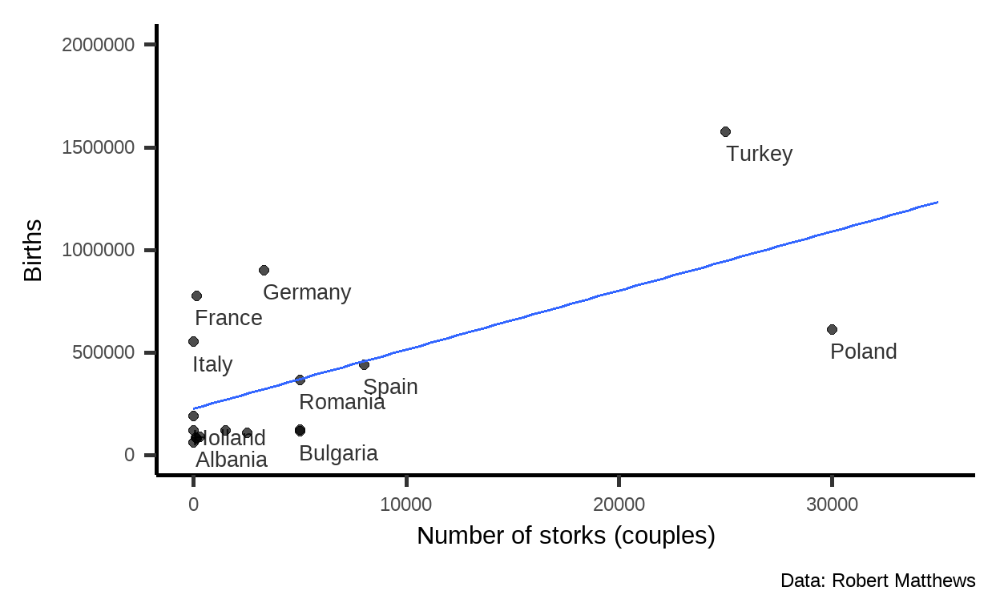

Learning objectives
In this module you will learn:
what a causal fork is;
what a confounder is;
that common causes often lead to confusion.
Congratulations!
A common design ofr new baby cards is a stork.

Quelle: https://pixabay.com/de/vectors/baby-vogel-lieferung-weiblich-1299514/
But in school we learned that storks do not bring babies.
Or do they?
The data situation
At the beginning of the millennium, Robert Matthews took the trouble to collect data to answer the question (Quelle):

As you can see, there are countries with many storks – where many babies are born. And countries with comparatively few storks – and at the same time few births.
Correlation
The correlation between the
\[r_{\color{green}{x},\color{blue}{y}} = 0.62.\]
The correlation coefficient lies always between \(-1\) and \(+1\). For negative correlations (e.g., between price and sales volume), it becomes less than zero; for positive correlations (e.g., between income and spending), it becomes greater than zero.
So \(r_{\color{green}{x},\color{blue}{y}} = 0.62\) is a relatively large positive correlation.
In the end, does the following graph apply?

Note: With a p value of \(0.008\), a correlation like the one found is called significant – to the usual significance level \(\alpha = 5\%\). That is, in a random sample, if there is no correlation in the population (\(H_0: \rho =0\)) the probability of obtaining a correlation coefficient at least as large as the observed one of \(|r_{\color{green}{x},\color{blue}{y}}| = 0.62\) is small.
To rule out popular misinterpretations of the p value: This does not mean that the probability of no correlation is \(0.008\). It also does not mean that the probability that storks are not the cause of births is \(0.008\).
Other explanations
Let’s consider possible alternative explanations. What is the relationship between the area of the country and the number of births?

Apparently, there is also a correlation between the size of a country and the number of births.
But there is also something else correlated with area, the number of storks:

Confounder
This suggests a potential alternative explanation. The size of a
country, the

The
(Of course, there are potentially numerous other common causes of the
Fork
Even complex causal graphs consist of simple basic elements. After the chain from module 4, here comes the fork:
\[\color{green}{X} \leftarrow \color{violet}{Z} \rightarrow \color{blue}{Y}\] Both the value of \(\color{green}{X}\) and the value of \(\color{blue}{Y}\) depend causally on \(\color{violet}{Z}\), the structural causal model looks as follows: \[\begin{eqnarray*} \color{violet}{Z} &=& U_{\color{violet}{Z}},\\ \color{green}{X} &=& f_{\color{blue}{X}}(\color{violet}{Z},U_{\color{green}{X}}),\\ \color{blue}{Y} &=& f_{\color{blue}{Y}}(\color{violet}{Z},U_{\color{blue}{Y}}). \end{eqnarray*}\]
If the value of \(\color{violet}{Z}\) is changed (\(do(z)\)), the values of \(\color{green}{X}\) and \(\color{blue}{Y}\) will change as a consequences.
Contrasting chains and forks
The causal path in a chain from \(\color{green}{X}\) to \(\color{blue}{Y}\) looks like this: \[\color{green}{X} \rightarrow \color{violet}{Z} \rightarrow \color{blue}{Y}\] \(\color{violet}{Z}\) listens to \(\color{green}{X}\) and \(\color{blue}{Y}\) to \(\color{violet}{Z}\). If \(\color{green}{X}\) is changed (\(do(\color{green}{X}=\color{green}{x})\)), the distribution of \(\color{violet}{Z}\) changes and so does the distribution of \(\color{blue}{Y}\).
In a fork, on the other hand, there is no causal path from \(\color{green}{X}\) to \(\color{blue}{Y}\): \[\color{green}{X} \leftarrow \color{violet}{Z} \rightarrow \color{blue}{Y}\] Although \(\color{blue}{Y}\) still listens to \(\color{violet}{Z}\), \(\color{violet}{Z}\) no longer listens to \(\color{green}{X}\), but the opposite is the case: \(\color{green}{X}\) listens to \(\color{violet}{Z}\). If \(\color{green}{X}\) is changed (\(do(\color{green}{X}=\color{green}{x})\)), the distribution of \(\color{violet}{Z}\) does not change, neither does the distribution of \(\color{blue}{Y}\).
Adjustment
How could we determine a possible causal effect of \(\color{green}{X}\) on \(\color{blue}{Y}\) in a fork (\(\color{green}{X} \leftarrow \color{violet}{Z} \rightarrow \color{blue}{Y}\))?
The confounder \(\color{violet}{Z}\)
must be taken into account. So in the example of y ~ x, the model y ~ x + z should be used.
The variable area in the
present data table. Change the code accordingly and see if and how the
estimated association between storks and
births changes in the model.
lm(births ~ storks, data = StorksBirths)lm(births ~ storks + area, data = StorksBirths)Without taking into account the
In fact, in this model the effect is no longer statistically significantly different from 0. So the observed mini-relationship may just reflect random fluctuations. And, of course, there could be additional confounders.
Summary
To determine the causal effect of \(X\) on \(Y\) in a fork \[X \leftarrow Z \rightarrow Y\], the confounder \(Z\) must be taken into account If \(Z\) is simply ignored, the fork remains open and a non-causal associations between \(X\) and \(Y\) distorts the analysis results. The confounder can be taken into account through various means – for example, the variable can be included in a linear model, but we could also do stratified comparisons. If this adjustment is done properly, the fork is closed and no longer confounds the interpretation of the analysis.
Outlook: Time matters
When the development of two variables over time is considered, time in itself often produces high correlations. For example, here’s the correlation between the divorce rate in Maine and the per capita consumption of magarine:

Quelle: Tyler
Vigen: Spurious correlations
The reason for the high correlation is simply that both the divorce rate and consumption of magarine declined over time. Fewer divorces did not reduce margarine consumption; the decline in margarine consumption did not cause fewer divorces.
A simple simulation of a random walk with drift illustrates
the phenomenon. Here both variables have a trend – but otherwise they
have nothing to do with each other, so neither is x1 the
cause of x2 nor the other way around.
Note: We did not set up the random number generator here, so
there will be random variation in the outcome each time you press
Run Code.
# number of time points
n <- 100
timepoints <- 1:n
# drift
d1 <- 0.1
d2 <- 0.2
# initialize vectors
x1 <- numeric(n)
x2 <- numeric(n)
# initial value (time point 1)
x1[1] <- 0
x2[1] <- 0
# simulate a random walk with drift with a loop
# new observation = previous observation + drift + random noise
for (i in 2:n)
{
x1[i] <- x1[(i-1)] + d1 + rnorm(1, mean = 0, sd = 1)
x2[i] <- x2[(i-1)] + d2 + rnorm(1, mean = 0, sd = 1)
}
# data table
RandomWalk <- data.frame(
timepoints = timepoints,
x1 = x1,
x2 = x2
)
# Figure
gf_line(x1 ~ timepoints, color = "orange", data = RandomWalk) %>%
gf_line(x2 ~ timepoints, color = "purple", data = RandomWalk) %>%
gf_labs(y = "Development")
# correlation (incl. test)
cor.test(x1 ~ x2, data = RandomWalk)Note
This course was supported by a grant from the German Federal Ministry of Education and Research, grant number 16DHBQP040.